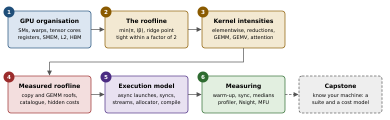
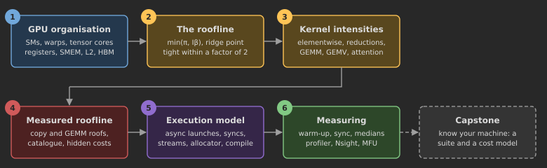
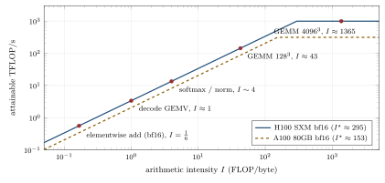
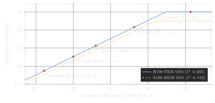
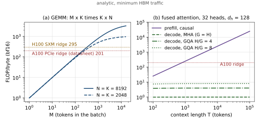
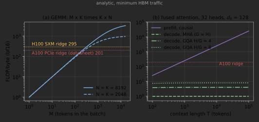
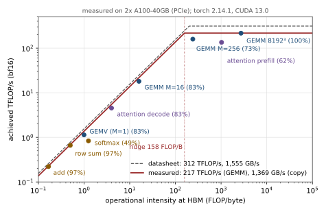
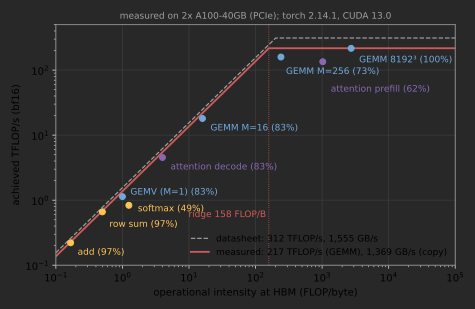
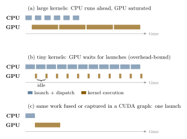
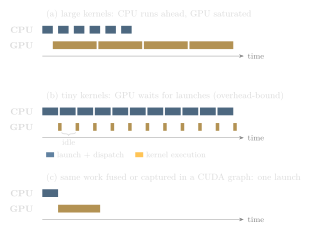

Chapter 3 The Machine Underneath: GPUs, Rooflines and Measurement
Chapter 2 wrote programs: tensors, a graph that autograd differentiates, a module, a loader and a training loop that runs on one GPU or several. Every one of those programs reaches the hardware as a stream of kernels launched onto an accelerator, and how fast it runs is decided by questions the API never asks. How many bytes does each kernel move through the memory hierarchy, and how much arithmetic does it do for each of them? Can the CPU enqueue kernels as fast as the GPU retires them? Was the clock that timed the kernel measuring the kernel at all? This chapter opens the box and answers these questions with numbers.
We start with how a GPU is organised, only as far as we need it: streaming multiprocessors, tensor cores and a memory hierarchy whose levels trade capacity for bandwidth. From that comes the roofline model, which predicts whether a kernel is limited by arithmetic or by memory bandwidth, and we make it exact enough to compute with: operational intensity at a given level of the memory hierarchy, a proposition that bounds how far a kernel can sit below its roof, the intensity of every class of kernel an LLM runs, and an empirical roofline measured on this book’s reference machine with those kernels placed on it. The roofline is a statement about steady-state throughput, so we then name what it hides (latency, occupancy, launch overhead, wave quantisation and the clock) and turn to PyTorch’s asynchronous execution model, where most of the hidden cost of small kernels lives: synchronisation points, streams, the caching allocator, CUDA graphs and torch.compile. The chapter ends with the discipline that makes all of these numbers trustworthy: warm-up, synchronisation, repetition and a profiler.
These are the tools we use to reason about every optimisation in later chapters. FlashAttention, the KV cache, continuous batching, weight quantisation and the parallelism strategies of Part III are each a move along one axis of the roofline, or a reduction of one of the costs it hides. Every measured number comes from one A100-40GB PCIe card of our reference machine, and Lab 3 reproduces every one of them on yours. The deep treatments come later: the SM itself in ??, the profiling toolchain in ??, number formats in Chapter 4, and a full microbenchmark suite with a calibrated cost model in the capstone Chapter 6.


3.1 How a GPU is organised
The details differ across generations and vendors, but the organisation of an NVIDIA datacentre GPU is representative (Figure 3.2); we use the H100 SXM as the running example and our own A100 as the machine we measure.
Streaming multiprocessors. The chip consists of many identical streaming multiprocessors (SMs), 132 on an H100 SXM. Each SM runs many threads concurrently, organised in warps of 32 threads that execute the same instruction in lock-step (SIMT), and groups of warps form thread blocks that are scheduled onto one SM and can share fast on-chip memory. Each SM contains scalar/vector units and tensor cores, specialised units that compute small matrix products (for example \(16\times8\times16\) tiles) in one instruction. Nearly all of an H100’s 989 TFLOP/s of bf16 throughput comes from tensor cores; the non-tensor fp32 throughput is more than an order of magnitude lower. A kernel that cannot be phrased as matrix multiplication cannot use most of the chip’s FLOPs.
The memory hierarchy. Data move through a hierarchy whose levels trade capacity for bandwidth and latency: per-thread registers (256 KB per SM in total); per-SM shared memory/L1 (up to about 228 KB of configurable shared memory per SM on H100), explicitly managed by the kernel; a chip-wide L2 cache (50 MB); and off-chip high-bandwidth memory (HBM: 80 GB at 3.35 TB/s). Host memory sits beyond PCIe (tens of GB/s), and other GPUs are reachable over NVLink (900 GB/s aggregate per H100).
Kernels. A GPU kernel is a function executed by a grid of thread blocks. A typical PyTorch operation, say torch.add(x, y), launches one kernel that reads \(x\) and \(y\) from HBM, adds them in registers, and writes the result back to HBM. A matrix multiplication launches a cuBLAS kernel that tiles the output, stages input tiles in shared memory, and feeds tensor cores from registers. The difference in how much work each loaded byte supports is the subject of the next section.
Our machine. Every measured number in this book comes from a workstation with two A100-40GB PCIe cards. Each has 108 SMs, a 40 MB L2 cache, up to 164 KB of shared memory per SM, 40 GB of HBM2 at 1.555 TB/s and a dense bf16 tensor-core peak of 312 TFLOP/s, all inside a 250 W power limit. The two cards are connected only by PCIe Gen4 x16, about 25 GB/s per direction on paper and 20–22 GB/s measured, with no NVLink. ?? takes the SM apart; here we need only its two roofs.
3.2 The roofline model
A kernel needs time for its arithmetic and time to move its data. If the two overlap perfectly (a good first approximation for well-written kernels), its runtime is bounded below by the larger: \[\begin{equation} t \;\ge\; \max\!\left(\frac{F}{\pi},\; \frac{Q}{\beta}\right), \tag{3.1} \end{equation}\] where \(F\) is the number of FLOPs, \(Q\) the bytes moved to and from HBM, \(\pi\) the peak FLOP/s and \(\beta\) the peak bandwidth. Dividing \(F\) by \(t\) gives the attainable throughput as a function of the kernel’s operational intensity \(I = F/Q\) (FLOPs per byte, also called arithmetic intensity): \[\begin{equation} \text{attainable FLOP/s} \;=\; \min(\pi,\; I\cdot\beta). \tag{3.2} \end{equation}\] Plotted on log–log axes, this is a sloped line (bandwidth-bound region) meeting a flat line (compute-bound region) at the ridge point \(I^\star=\pi/\beta\): the roofline (Williams, Waterman and Patterson, 2009). Kernels left of the ridge are memory-bound; making their arithmetic faster does nothing, only moving fewer bytes helps. Kernels right of it are compute-bound.


3.3 Operational intensity, precisely
The two-line model hides three choices that decide whether its predictions are right.
Which FLOPs. \(F\) counts the arithmetic the algorithm needs, with a multiply–add counted as two FLOPs, not the instructions the kernel happens to issue. Index arithmetic, address computation and work wasted on masked or padded elements are not in \(F\), so a kernel that wastes work shows up as a kernel that falls short of its roof.
Which bytes. \(Q\) is the traffic across one boundary of the memory hierarchy. Williams et al. deliberately chose the name operational intensity to say that \(Q\) is the DRAM traffic after the caches have filtered the program’s loads and stores; the same kernel has a different intensity with respect to L2 or shared memory. We write \(I_\ell = F/Q_\ell\) for level \(\ell\) and, unless stated otherwise, mean HBM. For each level there is a roof, \(\min(\pi, I_\ell\beta_\ell)\), and the kernel’s attainable rate is the minimum over levels (the hierarchical roofline; Yang, Kurth and Williams, 2020).
Which traffic count. Every input must be read once and every output written once, so \(Q \ge Q_{\min}\), the compulsory traffic. We compute intensities from \(Q_{\min}\); a real kernel that re-reads data because its working set does not fit on chip moves more bytes, has a lower true intensity, and lands below the analytic point. A fused kernel moves fewer bytes than the chain of kernels it replaces, which is the whole argument for fusion.
Proposition 3.1 (The roofline is tight to within a factor of two).
Suppose a kernel’s only costs are \(F\) FLOPs and \(Q\) bytes; that the compute units never exceed \(\pi\) nor the memory system \(\beta\); that each runs at its peak rate whenever it is busy; and that at every instant at least one of the two is busy. Then \[\max\!\left(\frac{F}{\pi},\frac{Q}{\beta}\right) \;\le\; t \;\le\; \frac{F}{\pi}+\frac{Q}{\beta} \;\le\; 2\max\!\left(\frac{F}{\pi},\frac{Q}{\beta}\right).\] The left inequality holds because neither unit can exceed its peak; the middle one because each unit is busy for exactly \(F/\pi\) or \(Q/\beta\) seconds when it runs at its peak, and with at least one unit busy at every instant \(t\) is at most the sum of the two busy times. Hence a kernel’s achieved FLOP/s lies between half the roofline and the roofline, and the factor of two is reached exactly at the ridge point with no overlap at all. A kernel far below half its roof therefore has a cost the model does not contain: latency, launch overhead, too little parallelism, or traffic above \(Q_{\min}\) (Section 3.6).
The ridge point is a property of the machine alone. For the A100-40GB PCIe, \(I^\star = 312\times10^{12}/1.555\times10^{12} \approx 201\) FLOP/byte from the datasheet; for the H100 SXM, \(989/3.35 \approx 295\). A kernel needs more than 200 FLOPs for every byte it brings from HBM before the A100’s tensor cores, rather than its memory, set its speed.
3.4 Operational intensity of the kernels that matter
We now compute \(I\) for every class of kernel an LLM runs, with \(b\) bytes per element: 4 in fp32, 2 in bf16 and fp16, 1 in fp8 (Section 2.2.4).
Elementwise operations.
An operation that reads \(n_{\text{in}}\) tensors and writes \(n_{\text{out}}\), doing \(f\) FLOPs per element, has \(I = f/(b(n_{\text{in}}+n_{\text{out}}))\). y = x + z in bf16 does 1 FLOP per element and moves 6 bytes: \(I=1/6\). Activation functions, residual additions, dropout, and the scaling in attention are all like this; even a GELU with a dozen FLOPs per element stays near 3 FLOP/byte. All are deeply memory-bound, so the only way to speed them up is to avoid materialising their inputs and outputs in HBM, by fusing them into neighbouring kernels.
Reductions and normalisations.
A row-wise sum of an \(r\times c\) tensor does \(rc\) adds, reads \(rc\) elements and writes \(r\): \(I = rc/(b(rc+r)) \approx 1/b\). Softmax over the same rows needs a maximum, a subtraction, an exponential, a sum and a division, about 5 FLOPs per element, and at minimum reads and writes each element once: \(I\approx 5/(2b) = 1.25\) in bf16. RMSNorm and LayerNorm are similar, \(I\) of order 1. Reductions are as memory-bound as elementwise operations; what makes them harder is that each output depends on a whole row, so a kernel must combine partial results across threads, which costs synchronisation that an elementwise kernel never pays. We will see that cost in our measurements.
Matrix multiplication.
For \(\mathbf{C}=\mathbf{A}\mathbf{B}\) with \(\mathbf{A}\in\mathbb{R}^{M\times K}\), \(\mathbf{B}\in\mathbb{R}^{K\times N}\), \(F=2MNK\) and, at best, \(Q=b(MK+KN+MN)\) (each operand read once, the result written once). Dividing numerator and denominator by \(MNK\) gives a form that is easier to reason with: \[\begin{equation} I_{\text{GEMM}} = \frac{2MNK}{b(MK+KN+MN)} = \frac{2}{b}\left(\frac{1}{M}+\frac{1}{N}+\frac{1}{K}\right)^{-1}. \tag{3.3} \end{equation}\] The intensity is \(2/b\) times a harmonic mean of the three dimensions (up to a factor of 3), so the smallest dimension decides it. For a square GEMM, \(I = 2n/(3b)\): in bf16, \(I=n/3\), which crosses the H100 ridge near \(n\approx885\) and the A100 ridge near \(n\approx600\). Large training GEMMs are compute-bound; small ones are not.
Matrix–vector products and the batch that reaches the ridge.
With \(M=1\) (one token’s activations times a weight matrix), (3.3) gives \(I\approx 2/b\): about 1 FLOP/byte in bf16, and 4 with int4 weights. This is the operation at the heart of batch-1 decoding, and it sits at about \(1/200\) of the A100’s ridge point and \(1/300\) of the H100’s. With a batch of \(M\) tokens sharing the same weights, \(I\approx 2M/b\) for \(M\ll K,N\); batching is the lever that slides decoding up the roofline. Setting (3.3) equal to \(I^\star\) and solving for \(M\) gives the batch at which a layer becomes compute-bound: \[\begin{equation} M^\star = \left(\frac{2}{bI^\star} - \frac{1}{N} - \frac{1}{K}\right)^{-1} \;\approx\; \frac{bI^\star}{2}. \tag{3.4} \end{equation}\] For an \(8192\times8192\) bf16 weight on the A100, \(M^\star = (1/200.6 - 2/8192)^{-1} \approx 211\) tokens. This is the same critical batch the napkin calculator of Lab 1 finds for whole models.
Attention: prefill and decode.
A fused (FlashAttention-style) kernel reads \(\mathbf{Q}\), \(\mathbf{K}\), \(\mathbf{V}\) once and writes the output once; the scores never reach HBM. With \(H\) query heads, \(G\) key–value heads, head dimension \(d_h\), \(T_q\) queries and \(T_k\) keys, it does \(4HT_qT_kd_h\) FLOPs (\(QK^\top\) and \(PV\)) and moves \(b\,d_h(2HT_q + 2GT_k)\) bytes. Two regimes follow. In prefill, \(T_q=T_k=T\), and with the causal mask halving the work, \[\begin{equation} I_{\text{prefill}} \approx \frac{2HT^2d_h}{b\,d_h\,T(2H+2G)} = \frac{HT}{b(H+G)} \;\xrightarrow{G=H}\; \frac{T}{2b}, \tag{3.5} \end{equation}\] about 1,024 FLOP/byte at \(T=4096\) in bf16: compute-bound for any prompt longer than a few hundred tokens. In decode, \(T_q=1\) and the cache of \(T\) tokens dominates the bytes: \[\begin{equation} I_{\text{decode}} \approx \frac{4HTd_h}{2b\,G\,T\,d_h} = \frac{2}{b}\cdot\frac{H}{G}. \tag{3.6} \end{equation}\] In bf16 this is exactly the grouped-query ratio \(H/G\): 1 for multi-head attention, 4 or 8 for typical GQA models, independent of the context length and of the batch, because every sequence reads its own cache. Batching cannot rescue decode attention the way it rescues the weight GEMMs; only sharing the cache across heads can. Multi-head latent attention (DeepSeek-V2 and V3) takes this furthest: all \(H\) heads read one latent of \(d_c+d_r\) values per token and do about \(4d_c+2d_r\) FLOPs each on it, so \(I \approx H(4d_c+2d_r)/(b(d_c+d_r))\), about 240 FLOP/byte for \(H=128\), \(d_c=512\), \(d_r=64\), past the A100’s ridge (?? and ??).
Without fusion the picture changes. An unfused implementation writes the \(T\times T\) score matrix, reads it for the softmax, writes the probabilities and reads them again for \(PV\): \(4bHT^2\) extra bytes. Its intensity becomes \(Td_h/(b(T+d_h))\), which tends to \(d_h/b = 64\) FLOP/byte for long sequences: memory-bound on every GPU in this chapter, however long the prompt. FlashAttention (Chapter 9) is, in roofline terms, the move from 64 to \(T/(2b)\).
| Kernel (bf16) | \(F\) | \(Q_{\min}\) | \(I\) (FLOP/byte) | A100 PCIe |
|---|---|---|---|---|
x + y, \(n\) elements |
\(n\) | \(6n\) | 0.17 | memory |
| row sum, \(r\times c\) | \(rc\) | \(2(rc+r)\) | 0.5 | memory |
| softmax, \(r\times c\) | \(5rc\) | \(4rc\) | 1.25 | memory |
| GEMV, \(1\times8192\) by \(8192\times8192\) | \(2NK\) | \(2(K+NK+N)\) | 1.0 | memory |
| GEMM, \(M=16\), \(N=K=8192\) | \(2MNK\) | \(2(MK+KN+MN)\) | 15.9 | memory |
| GEMM, \(M=256\), \(N=K=8192\) | \(2MNK\) | \(2(MK+KN+MN)\) | 241 | compute (barely) |
| GEMM, \(8192^3\) | \(2n^3\) | \(6n^2\) | 2,731 | compute |
| attention prefill, causal, \(T=4096\), \(H=G=32\) | \(\approx 2HT^2d_h\) | \(8HTd_h\) | 1,024 | compute |
| attention prefill, unfused, same shape | \(4HT^2d_h\) | \(8HTd_h + 8HT^2\) | 62 | memory |
| attention decode, \(H/G=4\), \(T=4096\) | \(4HTd_h\) | \(\approx 4GTd_h\) | 4 | memory |
Figure 3.4 plots two of these formulas against their parameters. The GEMM curve rises with slope one until \(M\) approaches the other dimensions, crossing both ridges at a few hundred tokens; the attention curves show prefill rising linearly with context while decode stays flat at \(H/G\).


Napkin Math: Fusion pays for memory-bound chains
Take a bf16 activation tensor of \(8\times4096\times4096\) elements (256 MiB) passing through bias-add, GELU and dropout as three separate kernels: each reads and writes the tensor, about \(3\times2\times256\) MiB \(\approx\) 1.6 GB of traffic, \(\approx\)0.48 ms at 3.35 TB/s. Fused into one kernel it reads once and writes once: 0.54 GB, \(\approx\)0.16 ms, a \(3\times\) speedup with identical FLOPs. This is exactly what torch.compile’s code generator does automatically (Section 3.7) and what we do by hand in Triton in Appendix A.
3.5 An empirical roofline on our machine
Datasheet peaks are upper bounds that no program reaches. An empirical roofline replaces \(\pi\) and \(\beta\) by the best rates a simple program achieves, so that the distance between a kernel and its roof measures the kernel, not the marketing. We measure each roof with the simplest kernel that saturates it. For bandwidth, a copy, y.copy_(x) on byte buffers: no arithmetic at all, perfectly sequential access, and buffers up to 1 GiB, far larger than the 40 MB L2, so every byte comes from HBM. For compute, a large bf16 matrix multiplication, which cuBLAS has tuned for years. Each measurement follows the rules of Section 3.8, with two additions: the warm-up runs for a fixed time rather than a fixed count, because the GPU’s clocks take a fraction of a second to settle, and we keep the 10th and 90th percentiles of 20 repetitions as well as the median. An idle A100’s SM clock sits far below its 1,410 MHz maximum and needs about half a second of load to reach it, so every probe and every kernel first runs for one second (WARMUP_S in the lab).
lab03_roofline/solution.py).
def measure_copy_bandwidth(sizes_bytes, device="cpu", reps=20):
out = []
for n in sizes_bytes:
x = torch.empty(n, dtype=torch.uint8, device=device).random_(0, 255)
y = torch.empty_like(x)
st = time_stats(lambda: y.copy_(x), reps=reps) # median, p10, p90 seconds
out.append(dict(n_bytes=n, bytes=2 * n, bytes_per_s=2 * n / st["seconds"], **st))
return out
def _point(name, fn, flops, nbytes, reps): # one kernel on the roofline
st = time_stats(fn, reps=reps)
return dict(name=name, flops=flops, bytes=nbytes, intensity=flops / nbytes,
flops_per_s=flops / st["seconds"], bytes_per_s=nbytes / st["seconds"], **st)
pts.append(_point("attn_decode", # 16 sequences, GQA 32/8 heads
lambda: F.scaled_dot_product_attention(q, kk, vv, enable_gqa=True),
B * attention_flops(1, T, H, D), B * attention_bytes(1, T, H, G, D, b), reps))Table 3.2 gives the two roofs. The copy reaches 1,369 GB/s, 88% of the datasheet’s 1,555 GB/s, but only for large buffers: a 1 MiB copy runs at 139 GB/s, because moving 2 MiB at full bandwidth takes 1.5 μs while each call carries about 14 μs of fixed cost (Python dispatch, the launch, and the synchronisation in our timer). The best bf16 GEMM reaches 217 TFLOP/s, 70% of the 312 TFLOP/s peak, and the empirical ridge point is \(217/1.37 \approx 158\) FLOP/byte.
| Probe | Size | Achieved | Fraction of datasheet |
|---|---|---|---|
| copy | 1 MiB / 16 MiB / 64 MiB | 139 / 1,045 / 1,222 GB/s | 9% / 67% / 79% |
| copy | 256 MiB / 1 GiB | 1,343 / 1,369 GB/s | 86% / 88% |
| bf16 GEMM, random normal data | \(n\) = 1,024 / 2,048 / 4,096 | 62 / 131 / 201 TFLOP/s | 20% / 42% / 64% |
| bf16 GEMM, random normal data | \(n\) = 8,192 / 16,384 | 217 / 215 TFLOP/s | 70% / 69% |
| bf16 GEMM, all-zero data | \(n\) = 8,192 / 16,384 | 296 / 290 TFLOP/s | 95% / 93% |
Pitfall: The compute roof depends on the data
The last two rows of Table 3.2 run the same cuBLAS kernel on the same shapes, with the same instructions and the same bytes; only the values differ. With all-zero inputs the GEMM runs 36% faster. The cause is power, not arithmetic. The A100 PCIe card is limited to 250 W; switching transistors costs energy in proportion to how many bits toggle, random data toggles many of them on every multiply, and the power manager responds by lowering the clock. With zeros almost nothing toggles and the clock stays high. Sampling nvidia-smi while each GEMM runs for eight seconds shows it directly: on random data the card sits at its 250 W limit with the SM clock at 1,035 MHz; on zeros it draws 234 W at 1,380 MHz, close to the 1,410 MHz maximum (measured on 2x A100-40GB (PCIe)). The ratio of the clocks, 1.33, is the ratio of the throughputs. Horace He (2024) reports the same effect on H100s. Two lessons follow. Benchmark on data shaped like the real workload (random normal values are a reasonable proxy for weights and activations; zeros, ones and torch.empty are not), and treat the compute roof of a power-limited card as a property of the workload as much as of the chip.
We can now place the kernel catalogue of Table 3.1 on the measured roof. Table 3.3 lists each kernel’s achieved rate and its fraction of the attainable rate \(\min(\pi, I\beta)\) at its intensity, and Figure 3.5 draws the result.
| Kernel (bf16) | \(I\) (FLOP/byte) | Time (μs) | Achieved | Fraction of roof |
|---|---|---|---|---|
x + y, \(2^{27}\) elements |
0.17 | 606 | 1,328 GB/s | 97% |
| row sum, \(2^{15}\times4096\) | 0.5 | 203 | 1,324 GB/s | 97% |
| softmax, \(2^{15}\times4096\) | 1.25 | 805 | 667 GB/s | 49% |
| GEMV, \(M=1\) | 1.0 | 118 | 1,136 GB/s | 83% |
| GEMM, \(M=16\) | 15.9 | 119 | 18.0 TFLOP/s | 83% |
| GEMM, \(M=256\) | 241 | 216 | 159 TFLOP/s | 73% |
| GEMM, \(8192^3\) | 2,731 | 5,084 | 216 TFLOP/s | 100% |
| attention prefill (SDPA, causal) | 1,020 | 1,020 | 135 TFLOP/s | 62% |
| attention decode (SDPA, GQA) | 4 | 237 | 1,135 GB/s | 83% |


Four observations are worth the trouble of the measurement. First, the streaming kernels (add, row sum) sit on the bandwidth roof, as the model predicts: their cost is their bytes. Second, the GEMV and the \(M=16\) GEMM take the same 119 μs. Sixteen tokens cost the same as one, because both read the same 134 MB weight and the extra arithmetic is free below the ridge; this is the batching argument of the previous section, measured. Third, the GEMM at \(M=256\) sits just right of the ridge at 73% of its roof: near the ridge neither unit can idle while the other works, and the max-model of (3.1) is at its most optimistic, as the proposition above warned. Fourth, two kernels are well below their roofs for reasons the model cannot see. PyTorch’s fused prefill attention reaches 135 TFLOP/s, 62% of the GEMM roof (Dao, 2023, reports 50–73% of the A100 peak for FlashAttention-2 across shapes; the online softmax and the masking cost non-matmul instructions that a GEMM does not issue). The softmax reaches half the bandwidth roof even though Nsight Compute shows it moving the compulsory traffic and no more (268 MB read, 257 MB written): the missing half is time, not bytes, which is the subject of the next section.
3.6 What the roofline hides
The roofline is a bound on throughput in steady state. Everything that is not a steady stream of FLOPs or bytes is invisible to it, and on a GPU four such costs are routinely larger than the kernel’s useful work.
Latency and Little’s law. A load from HBM takes several hundred nanoseconds to return. To sustain bandwidth \(\beta\) with latency \(\lambda\), a memory system must have \(\beta\lambda\) bytes in flight at all times (Little, 1961). A kernel that issues a load and waits for it before issuing the next keeps one request in flight per thread and reaches a small fraction of \(\beta\) no matter how few bytes it moves in total.
Napkin Math: How many bytes must be in flight on an A100
Assume a loaded HBM latency of about 500 ns (the right value for our card is measured in ??). To sustain the measured 1.37 TB/s the chip needs \(1.37\times10^{12}\times500\times10^{-9}\approx 685\) KB of loads outstanding, about 6.3 KB on each of the 108 SMs. A warp issuing 16-byte vector loads requests 512 bytes per instruction, so every SM must keep about a dozen such warp-loads outstanding at every moment. A softmax block that spends part of its life in barrier-separated reductions, issuing no loads, drops below that line, and the bandwidth it achieves drops with it.
Occupancy. The way a GPU hides latency is to switch among many resident warps. How many warps fit on an SM is limited by the registers and shared memory each block uses; a kernel with too few resident warps (low occupancy) or too little independent work per warp cannot keep enough requests in flight. ?? measures this trade-off directly.
Launch overhead and small kernels. Each kernel launch costs several microseconds of CPU and driver time, and a kernel whose useful work is shorter than that is bound by neither roof. The 1 MiB copy above is the measured example: 90% of its time is fixed cost. Section 3.7 returns to this regime, and CUDA graphs and fusion are its remedies.
Quantisation, tails and clocks. A GEMM is cut into output tiles that are distributed over the 108 SMs in waves. A problem with fewer tiles than SMs leaves SMs idle, and one whose tile count is slightly above a multiple of 108 runs a last, nearly empty wave (wave quantisation). The \(n=1{,}024\) GEMM of Table 3.2 is both kinds of small: 10 μs of work at the measured roof, only 64 output tiles of \(128\times128\) for 108 SMs, plus the fixed per-call cost, which together hold it to 20% of peak. The clock itself varies with power, as the pitfall above showed, and with temperature.
Each of these costs has a counter that measures it, and the tools that read those counters (Nsight Compute, CUPTI and their equivalents on other vendors’ hardware) are the subject of ??. The roofline tells you how far a kernel is from where it could be; the counters tell you why.
Deeper Dive: Reading the research: Williams, Waterman and Patterson (2009), “Roofline”
The cost model, in our notation. The paper models a kernel on a multicore processor by two numbers, its floating-point work and its DRAM traffic after cache filtering, and a machine by two more, peak FLOP/s and peak sustainable DRAM bandwidth (measured with a stream-like benchmark, not taken from the datasheet). Attainable performance is (3.2), \(\min(\pi, I\beta)\), with \(I\) the operational intensity of Section 3.3. Two refinements make it a diagnostic rather than a bound. Ceilings below each roof mark what is attainable without a given optimisation (on the compute side, for example, without SIMD or without balanced multiplies and adds; on the bandwidth side, without unit-stride access or software prefetching), so the ceiling a kernel sits under names the optimisation it lacks. And the intensity of a kernel is not fixed: better blocking for caches moves it to the right.
What our code reproduces. The paper’s method is exactly the one in bench.py of Lab 3: a streaming probe for \(\beta\), a dense kernel for \(\pi\), analytic intensities for the kernels, and the kernels’ measured rates plotted against the roof. The paper’s machines, four multicore processors of 2008 from Intel, AMD, Sun and IBM, sustained less than their nominal DRAM bandwidth on the streaming probe; ours sustains 88% (1,369 of 1,555 GB/s), and its compute roof is 70% of nominal on realistic data. The paper’s kernels (sparse matrix–vector product, a lattice-Boltzmann code, a stencil and a 3-D FFT) had low operational intensities, between about 0.2 and 1.6 FLOP/byte, the range of our elementwise, reduction and GEMV kernels, and the paper’s central point carries over unchanged to LLM decode: for such kernels, effort spent on arithmetic is wasted until the bytes are reduced.
What the evaluation leaves out. The model has no notion of time other than throughput: latency, launch overhead, synchronisation and load imbalance are absent, which is why our softmax sits at half its roof with no ceiling to explain it. It has one compute roof, while a GPU has several (tensor cores per data type, the much slower non-tensor-core units, special-function units for exponentials), and one memory level, while fused kernels live or die by L2 and shared-memory bandwidth; hierarchical rooflines (Yang, Kurth and Williams, 2020) add the levels. Its peak is a constant, while ours depends on the data through the power limit. And it is a single-node model: communication between devices, the bottleneck of Chapter 24 on our PCIe-only box, needs a roof of its own.
Systems Lens: Reading the rest of the book through the roofline
Many optimisations in later chapters are roofline arguments. FlashAttention (Chapter 9) raises attention’s intensity by never writing the \(T\times T\) score matrix to HBM. The KV cache (Chapter 45) trades recomputation (FLOPs) for memory traffic. Grouped-query attention (Chapter 11) shrinks the bytes read per decoded token. Batching and continuous batching (Chapter 46) raise decoding’s \(I\) by sharing weight reads. Weight quantisation (Chapter 48) cuts \(Q\) directly. Speculative decoding verifies several tokens per weight read. Each is a move to the right on Figure 3.3, or a reduction of \(Q\) at fixed \(F\).
3.7 The execution model: asynchrony, overhead and compilation
3.7.1 Kernels are launched asynchronously
When Python calls a CUDA operation, PyTorch does the bookkeeping on the CPU (argument checks, dispatch, allocation), enqueues the kernel on a CUDA stream, and returns immediately, before the GPU has done any work. The CPU races ahead, enqueuing more kernels, while the GPU drains the queue in order. When the CPU is ahead, launch overhead is hidden and the GPU is always busy. When individual kernels are tiny (small tensors, many elementwise ops), the GPU finishes each kernel faster than the CPU can enqueue the next, and the program becomes overhead-bound: the GPU idles between kernels (Figure 3.6).


Napkin Math: When does launch overhead matter?
A Python-level PyTorch op costs on the order of 5–20 μs of CPU time; a kernel that moves 1 MB at 3.35 TB/s runs in 0.3 μs. Decoding one token of Qwen3-0.6B touches 28 layers with a dozen or more small kernels each: several hundred launches, i.e. milliseconds of CPU time, versus a bandwidth floor of about 0.36 ms (\(1.2\,\text{GB}/3.35\,\text{TB/s}\)). Eager-mode decoding of small models is therefore often CPU-bound by a large factor. This is why serving engines capture the decode step in a CUDA graph and why Chapter 45 shows large speedups from torch.compile on small models.
3.7.2 Synchronisation points
Because work is asynchronous, anything that needs a value computed on the GPU forces the CPU to wait for the queue to drain: .item(), .tolist(), print(tensor), .cpu(), and Python control flow that depends on tensor values (if loss > 0:). An innocent loss.item() for logging every step serialises CPU and GPU and destroys overlap. Log every \(k\) steps, or accumulate on the device. The same asynchrony makes naive timing wrong: time.time() around a CUDA call measures enqueue time, not execution time, unless the device is synchronised first (Section 3.8).
3.7.3 Streams and overlap
A stream is an in-order queue of kernels and copies. Work in different streams may overlap, which is how communication (NCCL kernels on their own stream), host-to-device copies (with pinned memory) and compute run concurrently. DDP’s bucketed all-reduce (Section 2.9.3) and the loader’s non_blocking copies from pinned memory (Section 2.6) exploit this; in Chapters 24 and 46 we schedule overlap explicitly.
3.7.4 The caching allocator
cudaMalloc and cudaFree are slow and synchronising, so PyTorch keeps freed blocks in a cache and reuses them. Consequently nvidia-smi reports the cache’s size rather than live tensors, and torch.cuda.memory_allocated() versus torch.cuda.memory_reserved() tell the two apart. Allocation patterns with many differently sized tensors (variable sequence lengths are the classic case) fragment the cache, which can produce out-of-memory errors with plenty of nominally free memory. The KV-cache designs of Chapters 45 and 46 preallocate to avoid exactly this.
3.7.5 Graphs and compilation
Eager execution is flexible but pays per-op overhead and cannot optimise across operations. Two mechanisms recover performance. CUDA graphs record a fixed sequence of kernel launches once and replay it with a single launch; they require static shapes and static memory addresses, which is why they suit the fixed-shape decode step of a serving engine. torch.compile captures Python-level programs into a graph (TorchDynamo), derives the backward graph ahead of time (AOTAutograd), and generates fused kernels (TorchInductor, emitting Triton on GPUs and C++/OpenMP on CPUs), optionally using CUDA graphs (mode="reduce-overhead"). The first call is slow, since it compiles, and changing input shapes can trigger recompilation. We use compilation for inference in Chapter 45 and for training in Chapter 20.
model = MLP(4096, 4096, hidden=(16384,)).to(device)
fast = torch.compile(model) # default: fuse ops, Triton kernels
x = torch.randn(64, 4096, device=device)
fast(x) # first call compiles (seconds)
fast(x) # later calls are fast
fast_rt = torch.compile(model, mode="reduce-overhead") # + CUDA graphs3.8 Measuring and profiling
Performance claims without careful measurement are folklore. Three rules make timings trustworthy: warm up (the first calls pay for allocator growth, cuBLAS heuristic selection, or compilation, and an idle GPU’s clock needs a fraction of a second of load to ramp up, so on a GPU warm up for a fixed time rather than a fixed number of calls); synchronise before reading the clock (asynchrony again); and repeat and take the median (robust to noise from other processes). llmsys.profiling.benchmark implements exactly this:
llmsys/profiling.py).
def benchmark(fn, warmup=3, iters=10, min_time=0.0):
for _ in range(warmup):
fn()
_sync() # drain queued GPU work
times, spent = [], 0.0
while len(times) < iters or spent < min_time:
t0 = time.perf_counter()
fn()
_sync() # wait for this call's kernels
dt = time.perf_counter() - t0
times.append(dt); spent += dt
return statistics.median(times)From a time, derive rates and compare them with the roofline. For a GEMM, achieved FLOP/s \(= 2mnk/t\) and achieved bandwidth \(= b(mk+kn+mn)/t\):
from llmsys.profiling import benchmark, matmul_stats, Roofline
a = torch.randn(4096, 4096, device="cuda", dtype=torch.bfloat16)
b = torch.randn(4096, 4096, device="cuda", dtype=torch.bfloat16)
t = benchmark(lambda: a @ b)
s = matmul_stats(4096, 4096, 4096, t, bytes_per_el=2)
roof = Roofline(peak_flops=989e12, peak_bw=3.35e12)
print(f"{s['flops_per_s']/1e12:.0f} TFLOP/s of "
f"{roof.attainable(s['intensity'])/1e12:.0f} attainable "
f"({roof.bound(s['intensity'])}-bound)")When a whole training step is slow, the question is which kernels dominate. torch.profiler records every operator and kernel with CPU and GPU times and can export a Chrome/Perfetto trace for timeline inspection; llmsys.profiling.top_ops returns the most expensive ops as a table:
from torch.profiler import profile, ProfilerActivity
acts = [ProfilerActivity.CPU, ProfilerActivity.CUDA]
with profile(activities=acts, record_shapes=True) as prof:
loss = F.cross_entropy(model(x), y); loss.backward(); opt.step()
print(prof.key_averages().table(sort_by="cuda_time_total", row_limit=10))
prof.export_chrome_trace("step.json") # open in ui.perfetto.devFor kernel-level questions (achieved occupancy, memory throughput, tensor-core utilisation, stalls), NVIDIA’s Nsight Systems (timelines across CPU, GPU, NCCL and NVTX ranges) and Nsight Compute (per-kernel hardware counters, including a roofline view) are the tools of record; Appendix A uses both and ?? builds the whole toolchain, down to the counter interfaces underneath them.
Pitfall: Common measurement mistakes
(1) Timing without synchronisation measures launch time. (2) Timing the first iteration measures compilation and allocator warm-up. (3) Benchmarking with inputs that fit in L2 cache (50 MB on H100) overstates bandwidth; use buffers several times larger than L2 or flush it. (4) Reporting a mean over runs that include a stray outlier: use medians and report spread. (5) Comparing dtypes without checking that the fast path (tensor cores, tf32) was actually enabled. (6) On shared machines, noisy neighbours make CPU numbers erratic; repeat until stable.
Systems Lens: Model FLOPs utilisation
For an entire training run the headline metric is model FLOPs utilisation (MFU): useful model FLOPs per second (for a dense transformer, \(6N\) per training token, Section 2.4, ignoring recomputation) divided by the hardware peak. If a 1.3B model trains at 150,000 tokens/s on 8 H100s, MFU \(=150{,}000\times6\times1.3\times10^9/(8\times989\times10^{12})
\approx 15\%\), a sign of overheads (small kernels, communication, data loading) worth profiling. Well-tuned large-scale runs report 35–55%. MFU is the training analogue of the roofline fraction for a single kernel, and llmsys.flops.mfu computes it.
3.9 Research frontier
This chapter’s research area is the performance model itself: how to predict what a kernel can achieve on a given machine, how to explain the distance between that prediction and what it does achieve, and how a whole program loses time between its kernels.
3.9.1 Open problems
Irregular and dynamic work. The roofline places a kernel at one intensity. Mixture-of-experts layers route a different number of tokens to every expert on every step, serving batches are ragged, and sparse attention reads a data-dependent subset of the cache, so the intensity of the same layer moves from step to step. A performance model for such workloads predicts a distribution, and how to build and validate one is open (?? and Chapter 46).
The memory wall. Peak FLOP/s has grown much faster than memory bandwidth for two decades (Gholami et al., 2024). At a fixed precision the ridge point does not rise monotonically: in bf16 it went from 201 FLOP/byte (A100 PCIe) to 295 (H100 SXM), back to about 206 on the H200 (989 TFLOP/s over 4.8 TB/s) and 281 on the B200 (2.25 PFLOP/s over 8 TB/s), because each generation also bought faster memory. It rises steeply once the lower-precision tensor cores are counted: the B200’s fp8 and fp4 peaks put its ridge near 562 and 1,125 FLOP/byte, and kernels that move to those formats without shrinking their bytes in proportion fall further to its left. Lower-precision formats, larger caches and processing near memory are all responses; which of them wins for LLM inference is not settled (Chapter 4 and ??).
Data movement as the cost. Ivanov et al. (2021) measured that in a BERT encoder layer, tensor contractions were 99.8% of the FLOPs but only 61% of the runtime; the rest was memory-bound normalisation, softmax and elementwise work. Fusion recovers much of that, and how far automatic fusion can go before hand-written kernels are needed is an active question (?? and ??).
The time between kernels. The roofline describes one kernel in steady state. A training or decode step also pays for launches, synchronisation and idle gaps between kernels, and these grow in relative terms with every GPU generation, because kernels get faster while the per-operation cost of Python and the driver does not (Section 3.7). Graph capture and CUDA graphs (Ansel et al., 2024) remove much of this for programs with static shapes. A model that predicts a whole step from its kernels plus these gaps, and stays accurate when shapes change from step to step, is still a modelling problem rather than a tool; Chapter 6 calibrates one for our box.
Power and energy. On a power-capped chip the compute roof depends on the data (Table 3.2). An energy roofline, joules per FLOP and per byte (Choi et al., 2013), is the natural model when the datacentre’s power, not its chips, is the budget.
3.9.2 The works that defined the area
- Williams, Waterman and Patterson (2009): the roofline and operational intensity; performance bounded by \(\min(\pi, I\beta)\) with ceilings that name missing optimisations.
- Little (1961): the queueing identity behind latency hiding: bytes in flight equal bandwidth times latency.
- Volkov (2016): latency hiding on GPUs as Little’s law; occupancy and instruction-level parallelism as two ways to keep enough requests in flight.
- Yang, Kurth and Williams (2020): the hierarchical roofline for GPUs, one roof per memory level and per compute unit, measured with hardware counters.
- Choi et al. (2013): a roofline for energy, separating the cost of a FLOP from the cost of a byte.
- Paszke et al. (2019): PyTorch’s asynchronous device queue, the execution model of Section 3.7.
- Ansel et al. (2024): PyTorch 2’s graph capture and compiler, which bring fusion and CUDA graphs to eager programs.
- Ivanov et al. (2021): data movement, not FLOPs, dominates transformer training time on GPUs.
- Dao et al. (2022): FlashAttention, the canonical example of raising operational intensity by restructuring an exact algorithm around the memory hierarchy.
- Gholami et al. (2024): the memory wall quantified for AI hardware and models.
3.9.3 Assumptions that are likely to break
- One compute roof. Each data type has its own tensor-core roof, and newer GPUs keep raising them (fp8 doubles the bf16 roof on an H100) while the units that compute exponentials and reductions grow slowly: an H100 SXM has 989 TFLOP/s of 16-bit matmul but only 3.9 TFLOP/s of special functions (Shah et al., 2024). Kernels such as attention become bound by the non-matmul roof.
- HBM is the level that matters. Fused kernels are bound by shared memory and L2; multi-GPU jobs by the interconnect; offloaded inference by PCIe, which on our box is 60 times slower than HBM.
- Peak is a constant. Power caps make it data-dependent; clocks vary with temperature.
- Overlap must be found by the hardware. Hopper-class GPUs expose asynchronous bulk copies and warp specialisation, so overlapping memory and compute becomes something the kernel programs explicitly (?? and ??).
3.9.4 How to recognise the next variant
Place a new performance paper by asking: (1) which roof or level it is about (a compute unit and data type; HBM, L2, shared memory; the interconnect, the host link or power); (2) whether it changes \(F\) (a different algorithm), \(Q\) (fusion, compression, caching) or neither (scheduling, overlap, launch amortisation); (3) which hidden cost of Section 3.6 it attacks; (4) its granularity (one kernel, an operator graph, a training step, a cluster); (5) the hardware feature it assumes (a data type, an asynchronous copy engine, a cache size); and (6) whether its evidence is a model, counters, or end-to-end time. A paper that moves a kernel to the right on the roofline and one that moves it up towards its roof are different contributions, and the best papers say which they are.
3.10 Summary
GPUs deliver most FLOPs through tensor cores and feed them through a memory hierarchy of registers, shared memory, L2 and HBM. Our A100-40GB PCIe has 108 SMs, a 40 MB L2, 1.555 TB/s of HBM2 and 312 TFLOP/s of dense bf16 on paper.
The roofline \(\min(\pi, I\beta)\) says whether a kernel is limited by compute or bandwidth; the ridge point \(\pi/\beta\) is a property of the machine. When compute and memory are the only costs and one of them is always busy, a kernel runs between half its roof and its roof.
Operational intensity is FLOPs per byte at one level of the memory hierarchy. A GEMM’s intensity is \(2/b\) times a harmonic mean of its dimensions, so its smallest dimension decides it; a layer becomes compute-bound at a batch of about \(bI^\star/2\) tokens; decode attention sits at \(H/G\) FLOP/byte in bf16 whatever the batch; fused prefill attention grows as \(T/(2b)\). Most LLM operations other than large GEMMs are bandwidth-bound.
Measured on our A100-40GB PCIe, the roofs are 1,369 GB/s (copy) and 217 TFLOP/s (bf16 GEMM on random data; 295 on zeros, because of the 250 W power limit), so the ridge is about 158 FLOP/byte. Streaming kernels reach 96–97% of their roof; latency, launch overhead, occupancy and wave quantisation explain the kernels that do not.
Execution is asynchronous: hidden launch overhead becomes visible with small kernels, and synchronisation points serialise CPU and GPU. Streams provide overlap, the caching allocator hides
cudaMallocat the price of fragmentation, and fusion, CUDA graphs andtorch.compilereduce launches and memory traffic.Measure with a timed warm-up, synchronisation and medians with their spread; profile to find dominant kernels; summarise training efficiency with MFU.
3.11 Exercises
Exercise 3.1 (Ridge points).
Compute the ridge point of an A100-80GB SXM (312 TFLOP/s, 2.04 TB/s) and an RTX 4090 (165 TFLOP/s, 1.01 TB/s) in bf16. At what square GEMM size \(n\) does each become compute-bound? Which GPU needs a larger decode batch to stop being memory-bound?
Exercise 3.2 (Intensity of a transformer MLP).
A GPT-style MLP computes \(\operatorname{GELU}(\mathbf{X}\mathbf{W}_1)\mathbf{W}_2\) with \(\mathbf{X}\in\mathbb{R}^{BT\times d}\), \(\mathbf{W}_1\in\mathbb{R}^{d\times4d}\), \(\mathbf{W}_2\in\mathbb{R}^{4d\times d}\), \(d=4096\), bf16. Compute FLOPs and minimal bytes for the two GEMMs and the GELU as separate kernels for \(BT=1\) and \(BT=4096\). Which kernels are memory-bound in each case? What is the saving from fusing GELU into the first GEMM’s epilogue?
Exercise 3.3 (Bytes in flight on an H100).
Repeat the napkin calculation of Section 3.6 for an H100 SXM (132 SMs, 3.35 TB/s), assuming the same 500 ns loaded latency. How many bytes must be outstanding per SM, and how many 16-byte-per-thread warp loads is that? Compare with the A100 and explain why a kernel that reaches its bandwidth roof on an A100 can fall short of it on an H100 without any change in its code.
Exercise 3.4 (Wave quantisation).
A bf16 GEMM with \(M=N=1{,}408\) and large \(K\) is tiled into \(128\times128\) output tiles, one tile per SM at a time, on the 108 SMs of our A100. (a) How many tiles and waves are there, and what fraction of the SM-time of the last wave does useful work? (b) Predict the fraction of the compute roof the GEMM can reach from quantisation alone. (c) Which nearby \(M=N\) fills its waves best, and what would you expect a sweep of \(n\) from 1,280 to 1,536 in steps of 32 to show?
Exercise 3.5 (Launch overhead).
Write a function applying 100 elementwise operations to a \(1024\)-element tensor and time it eagerly on a GPU (or CPU) with proper synchronisation. Repeat with a \(10^8\)-element tensor. Then apply torch.compile. Explain the three timings using Figure 3.6.
Exercise 3.6 (Hidden synchronisation).
Find every point at which the following training step forces the CPU to wait for the GPU, say which ones are needed, and rewrite the step so that the CPU waits at most once every 100 steps:
for step, (x, y) in enumerate(loader):
x, y = x.cuda(), y.cuda()
loss = F.cross_entropy(model(x), y)
if torch.isnan(loss):
raise RuntimeError("diverged")
opt.zero_grad(); loss.backward(); opt.step()
n_correct += (model(x).argmax(-1) == y).sum().item()
print(step, loss.item())Exercise 3.7 (Profiling).
Profile one training step of the MLP of Listing 3.2 with batch sizes 8 and 4096. Report the top five ops by device time in each case and classify each as compute- or memory-bound using the roofline. How does the fraction of time in aten::mm/addmm change?
Exercise 3.8 (MFU sanity check).
A team reports training a 3B model at 2.1 million tokens/s on 64 H100s. Compute the implied MFU. Is the claim plausible? What would you ask them about how “tokens” and “FLOPs” were counted?
Exercise 3.9 (An L2 roofline).
Extend the lab’s empirical roofline to the hierarchical setting of Yang, Kurth and Williams (2020). (a) Write an L2 probe: copy a buffer small enough that source and destination stay in the 40 MB L2, many times inside one timed call so that launch overhead is amortised, and report the L2 bandwidth. (b) Predict which kernels of Table 3.3 the L2 roof could limit, using their working sets. (c) With Nsight Compute’s DRAM and L2 byte counters, measure \(Q_{\text{HBM}}\) and \(Q_{\text{L2}}\) of the \(M=256\) GEMM and of the prefill attention kernel, place both on both roofs, and say which roof binds.
Exercise 3.10 (Predict, then measure: power and the compute roof).
- Predict how the SM clock and the power draw differ between the bf16 GEMM of
bench.pyon random normal data and on zeros; then measure both by samplingnvidia-smi --query-gpu=clocks.sm,power.draw --format=csv -lms 100while each runs for ten seconds. (b) Repeat with inputs whose values are random but whose low 4 mantissa bits are zero, and explain the result with the toggling argument of the pitfall in Section 3.5. (c) In the spirit of the energy roofline of Choi et al. (2013), estimate from your measurements the energy per bf16 FLOP and per HBM byte on the A100, and the operational intensity at which a kernel spends equal energy on the two. (d) Predict how much of this effect you would see on an H100 SXM with a 700 W limit, and why.
3.12 Lab 3: Rooflines and measurement
Lab 3: Rooflines and measurement
Code: code/labs/lab03_roofline
Goals
Measure your own machine and place its kernels on a roofline you built yourself. The lab first makes the roofline rigorous (the operational intensity of every kernel class, the ridge point, the attainable rate), then measures the two roofs (a GEMM sweep, a bandwidth sweep and a copy probe with time-based warm-up and percentiles), times the kernel catalogue of Table 3.1 and places it on the measured roof, profiles a training step, and measures what activation checkpointing does to peak memory, the measurement behind Table 2.1.
Setup
cd code
pytest -q labs/lab03_roofline # grades starter.py
LAB_IMPL=solution pytest -q labs/lab03_roofline # referenceTasks
Roofline basics.
matmul_intensity,elementwise_intensityandroofline_attainable: (3.3), the elementwise formula and (3.2).Ridge point.
ridge_point: \(I^\star=\pi/\beta\); the test checks 200.6 FLOP/byte for the A100-40GB PCIe datasheet.Reductions.
reduction_intensity: a row-wise sum, \(rc/(b(rc+r))\).Attention.
attention_flops,attention_bytesandattention_intensity: fused attention at minimum traffic, with grouped KV heads and an exact causal count (including chunked prefill, where \(T_q<T_k\)). The tests check the limits (3.5) and (3.6).Sweeps.
measure_matmul_sweepandmeasure_bandwidth_sweep: timed sweeps usingllmsys.profiling.benchmarkafter the provided time-based warm-up;empirical_rooflinepicks the best observed FLOP/s and bytes/s.Copy probe.
measure_copy_bandwidth: the probe of Listing 3.1, timed with the providedtime_stats(time-based warm-up; median, p10 and p90).Kernel catalogue.
measure_kernel_points: build and time the catalogue (add, row sum, softmax, GEMV, GEMMs with \(M\in\{16, 256, K\}\), causal prefill attention and GQA decode attention) and return one roofline point per kernel. Ascaleargument shrinks every shape so that the test runs on a CPU.Profile.
profile_train_step: profile forward, backward and step and return the top ops.Peak memory.
peak_step_memory: reset the allocator’s peak counter, run forward and backward through a stack of blocks with or withouttorch.utils.checkpoint, and return the peak bytes allocated above the starting point. The test (GPU only) checks that checkpointing lowers the peak.
Measurements
Run python labs/lab03_roofline/run.py on your machine (--device cuda --dtype bf16 on a GPU) to produce roofline.png. Then run python labs/lab03_roofline/bench.py --out-dir results, which measures both roofs, the kernel catalogue and the checkpointed MLP stack, and writes roofline.json and roofline.md with the hardware and software versions; figures.py --json results/roofline.json --out-dir results draws Figure 3.5 for your machine. The saved-activation counts in Table 2.1 use saved_activation_bytes of Lab 2. On our A100-40GB PCIe the whole run takes about 15 seconds and reproduces Tables 3.2, 3.3 and 2.1; the reference output is in reference_a100/. Expect GEMM points to climb the bandwidth slope and flatten at the compute roof for \(n\) in the low thousands, and elementwise points to sit near \(I=1/8\) (fp32) or \(1/4\) (bf16) on the bandwidth slope. On a GPU, compare your empirical peaks with the datasheet. Reaching 60–80% of peak bandwidth and 60–80% of peak bf16 FLOP/s with plain PyTorch is typical. On a laptop CPU, expect noisy results; repeat runs and note the variance.
Deliverables
Passing tests; your roofline plot annotated with the ridge point; a short table of the top five ops in a training step at batch sizes 8 and 4096 with a one-line roofline explanation of each; your empirical roofline with the kernel catalogue, and for every kernel below 80% of its roof one sentence naming the cost of Section 3.6 you think is responsible.
Stretch goals
(1) Add a bf16 and tf32 sweep and quantify the tensor-core speedup. (2) Time 100 tiny elementwise ops eagerly, with torch.compile, and with mode="reduce-overhead". (3) Use Nsight Compute’s roofline section on one GEMM and one elementwise kernel and compare with your empirical roofline. (4) Add an unfused attention (explicit softmax(Q @ K.T) @ V) to the catalogue and confirm that it lands near the 62 FLOP/byte of Table 3.1, left of the ridge. (5) Sweep square GEMMs from \(n=1{,}280\) to \(1{,}536\) in steps of 32 and find the wave-quantisation steps.